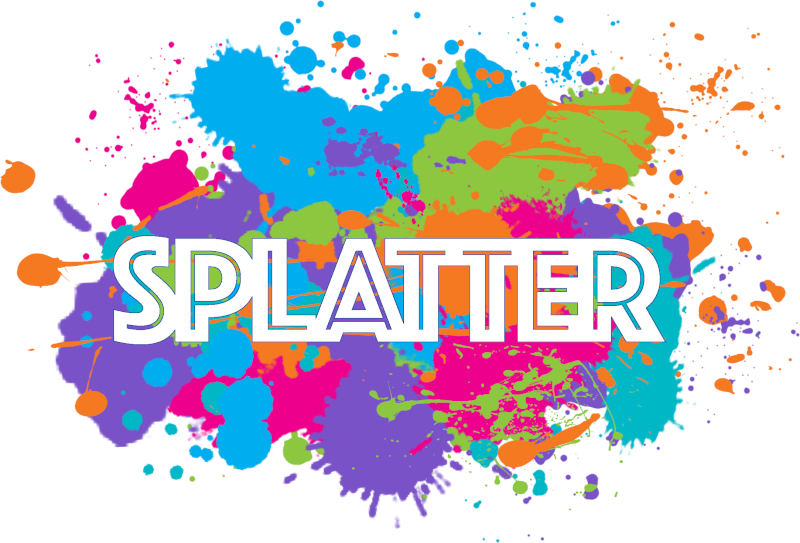
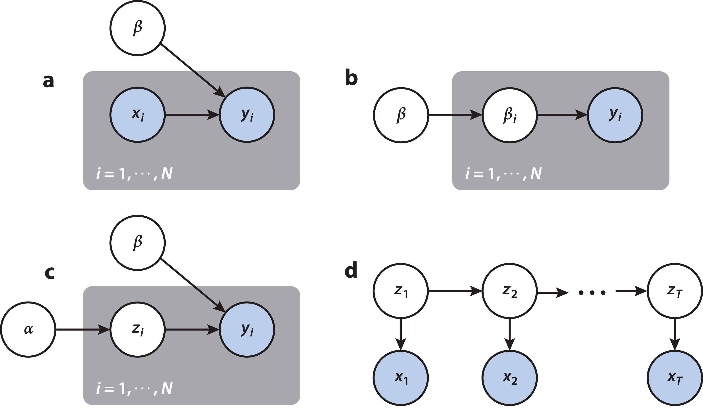
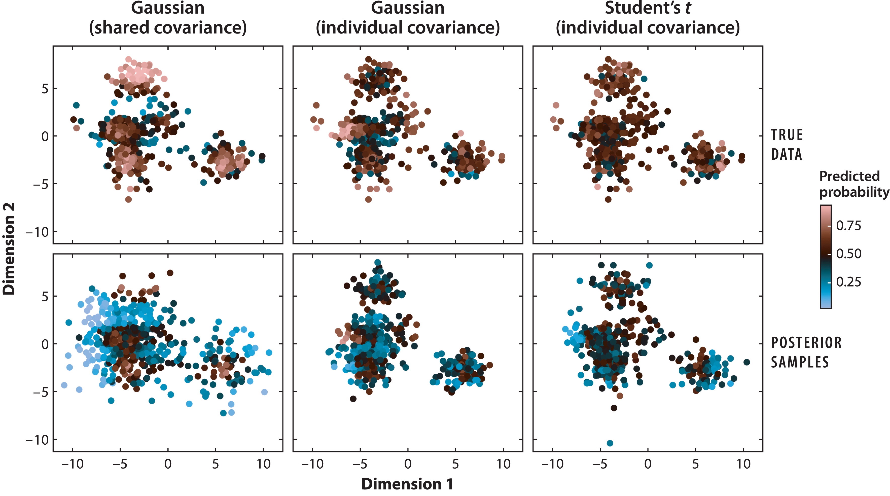
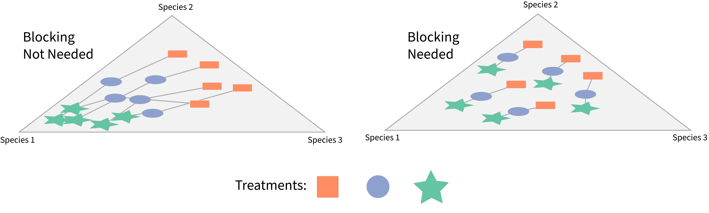
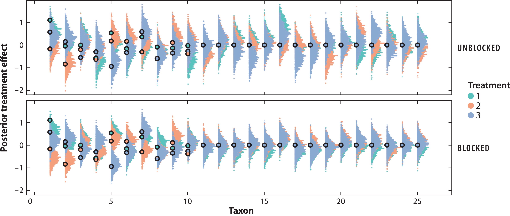
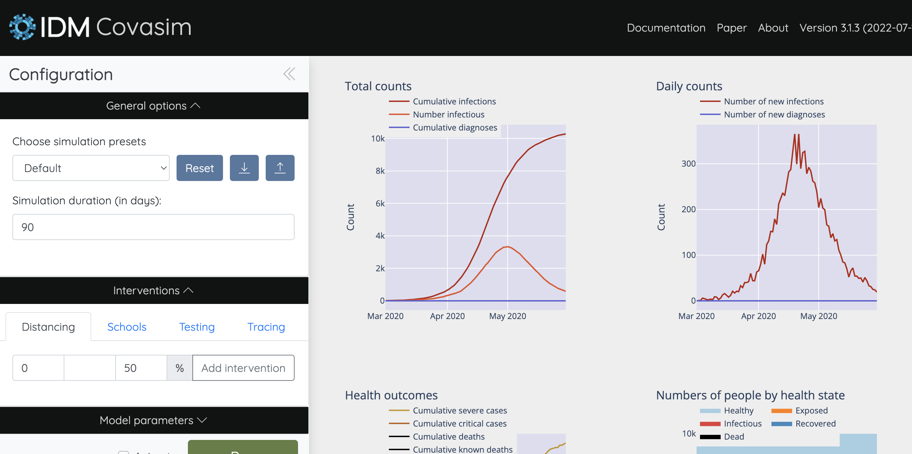
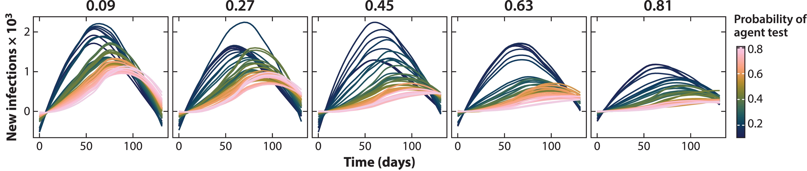

3 Beyond Black Box Simulation

Beyond Black Box Simulation
Lisbon Nova
[7 | May | 2025]
Paper: https://go.wisc.edu/833zs8 Code: https://go.wisc.edu/7222i9
Susan Holmes Stanford University
joint work with,
Kris Sankaran, UW-Madison
3.1 New Lingua Franca of Science
- Simulators have emerged as a general problem-solving device across various domains, many of which now have rich, open-source libraries.
- Where is the interface with statistics?
- Experimental design, model building, and decision-making.
The E3SM is used for long-term climate projections.
3.1.1 New Lingua Franca of Science
- Simulators have emerged as a general problem-solving device across various domains, many of which now have rich, open-source libraries.
- Where is the interface with statistics?
- Experimental design, model building, and decision-making.

Splatter generates synthetic single-cell genomics data.
3.1.2 Grammar of Generative Models
Transparent simulators can be built by interactively composing simple modules. Probabilistic programming has simplified the process.

- Regression
b: Hierarchy
c: Latent Structure
d: Temporal Variation
3.1.3 Discrepancy and Iterability
By learning a discriminator to contrast real vs. simulated data, we can systematically improve the assumed generative mechanism.

3.1.4 Experimental Design Renaissance
Let’s consider a microbiomics case study: To block or not to block?
- Blocking removes person-level effects…
- …but increases participant burden.

3.1.5 Simulation to the Rescue
How can we navigate trade-offs like this? Simulate!

Simulators provide data for more precise decision-making.
3.1.6 Covasim
Following the outbreak of COVID-19, the research community came together to build simulators that could inform pandemic response. * E.g., “What would happen if we held classes remotely for two weeks?”

3.1.7 Covasim
Covasim is an example of an agent-based model. Starting from local interaction rules, it lets us draw global inferences.

Statistical emulators mimic the relationship between input hyperparameters and output data, substantially reducing the computational burden.
Inference and imagination: Statistical calibration grounds us in reality while generative tinkering encourages us to imagine.
3.1.8 What are we going to study ?
Many examples, like showing non-identifiability, the evolution of mimicry in butterflies, longitudinal study design, the duality between agents and particles, … * Paper Link: https://go.wisc.edu/833zs8 * Code (R + Python + NetLogo): https://go.wisc.edu/7222i9
A github repository of the material is available here: spholmes.github.io/GenerativeModeling/docs/